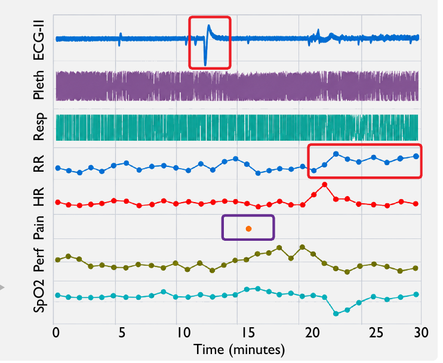
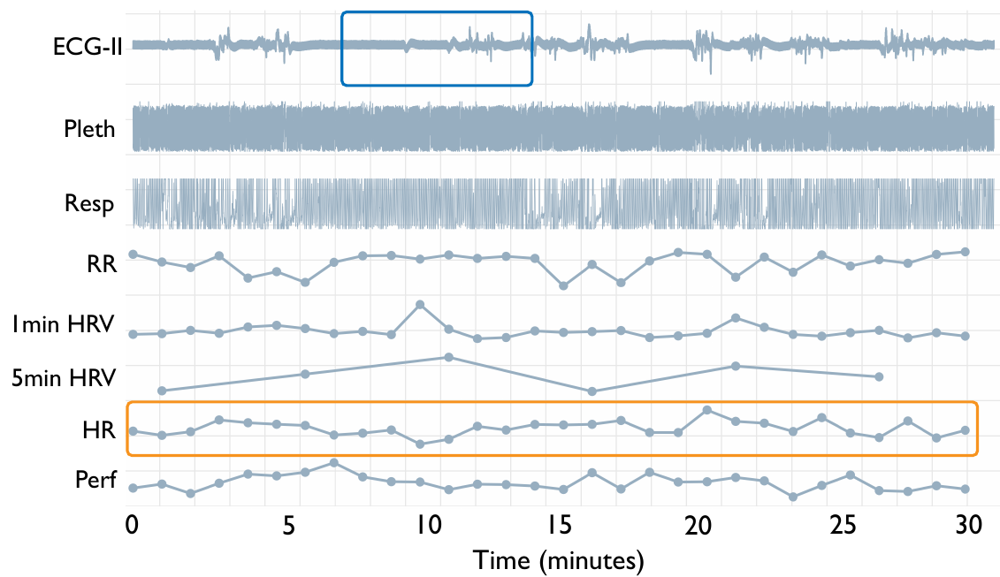
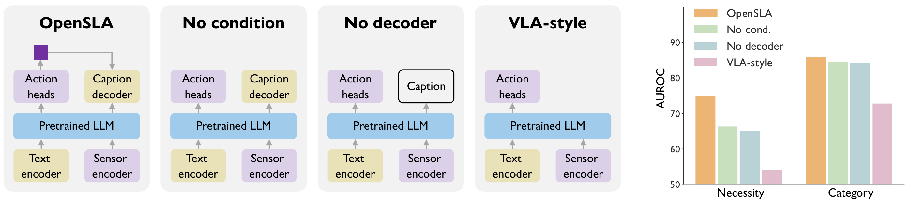
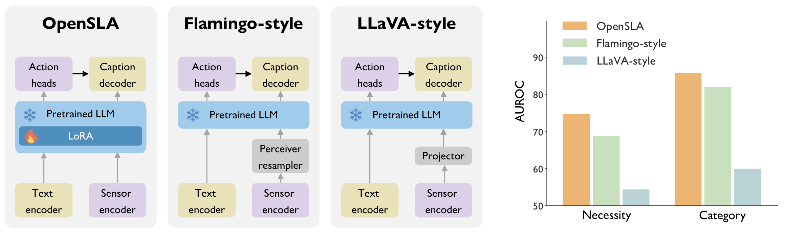

Clinical care
Waveforms and vitals with clinical context. Medications, procedures, diagnostics.
MC-MEDMIMIC-IIIMIMIC-IV · externalThe same model answers all three from one sensor window and the individual’s context.
A patient’s 30-minute record from the emergency department. Ask the model any question about it.

60-year-old male. Chief complaint: abdominal pain, nausea. Prior history: interstitial pulmonary disease, hypoxemia, …
Sensor-state understanding
Multi-level action prediction
Action-evidence grounding
The point of sensing is not to describe the world. It is to decide what to do next.
Today’s sensor models are built to perceive: they recognize a state, or predict an outcome, and stop. Every decision that follows is modeled somewhere else, as its own task with its own closed label space. Nothing connects the evidence, the context, and the act.
Language can hold all of it at once: what is being asked, who the individual is, what the signals show, and what action means. Written in language, a bedside decision, a surgical intervention, and an insulin bolus become the same kind of problem — so one model can learn them all.
OpenSLA is the first general framework to connect sensors, language, and actions. It decides whether to act, what kind of action, and which one; it describes what the signals show; and it explains the decision with the evidence behind it — all from a single model, grounded in the recording.
“Can sensor data, language, and action be modeled through a unified framework?”
Best action-necessity accuracy in all six cohorts. Best category in five.
Balanced accuracy (%); 50 is chance. Baseline = strongest of the eight compared methods. Tables 2–4.
Hover a phrase. The part of the recording it comes from lights up.

For heart-rate channel, the dominant finding is elevated heart-rate pattern; HR median 100, range 95–108, n=30. The cardiac waveform channel shows variable ECG waveform periodicity; rate proxy 95.2/min, IQR 0.40.
At the decision time, the observed vital signs show sinus-rate cardiac activity with HR approximately 90 bpm.
Across the recent monitored interval, pulse rate shows elevated heart-rate pattern; HR median 100, range 97–104, n=30. ECG Lead II: irregular Lead II rhythm proxy; rate proxy 95.2/min, IQR 0.40.
Results · state-estimation error, MAE ↓
Imipenem was never a training target, yet it lands among the antibiotics — and OpenSLA-H predicts it zero-shot at 71.4 balanced accuracy, against 61.9 for the strongest baseline.

Interpolate between two embeddings, and the actions in between fall into place.

Nearest real sample: 0.05 U endpoint
Action-only training is the weakest variant on every endpoint. VitalDB necessity AUROC: 54.1 → 74.9 with captions and action conditioning.
Add action-evidence captions: necessity AUROC 81.6 → 83.4 on MOVER, 64.3 → 74.9 on VitalDB.
Drop action conditioning or the fusion decoder and you still beat action-only. The full model wins all four operating-room endpoints.
Direct LoRA beats Flamingo-style cross-attention and LLaVA-style projectors on all four AUROC endpoints. VitalDB necessity: 74.9 vs 68.9 vs 54.4.
Hierarchical Memory: 14.5× fewer sensor tokens in clinical windows, 4.7× in the operating room; forward passes 3.4× and 1.7× faster.
MIMIC-IV, zero fine-tuning: 74.4 vs 69.3 necessity balanced accuracy against the best adapted baseline.


Caption for supervision. Train to act and to explain.

A text encoder for context, a frozen signal encoder per channel.
A LoRA-adapted LLM reads both. Action heads predict; an action-conditioned decoder explains.
Learned queries compress long recordings across resolutions; global queries keep the whole picture.
VLA-style, SensorLM-style, and supervised — same data, same compute.
Hover a phrase. Its source lights up.

The lead II ECG showed an irregular-periodicity proxy, with an estimated rate of 100.2 beats/min. Respiratory rate was elevated, with a median of 26 breaths/min and a range of 23–30 across 31 measurements.
Numerical respiratory-rate measurements and the respiration waveform both indicated rapid breathing.
Overall findings suggested a pain and nausea symptom burden, supported by the presenting complaints, elevated heart rate, and a pain score of 5.
Findings that bear on pain or nausea management are high pain reported nausea provides symptom evidence to the antiemetic.
Sensor histories paired with individual context, structured actions, and evidence captions.
Waveforms and vitals with clinical context. Medications, procedures, diagnostics.
MC-MEDMIMIC-IIIMIMIC-IV · externalPerioperative waveforms and measurements, aligned with the actions taken in surgery.
MOVERVitalDBGlucose and basal insulin from daily life. The action is a bolus.
MetaboNetPEDAPLanguage doesn’t just describe observations. It connects states to actions.
@misc{xu2026opensla,
title = {Sensor-Language-Action Models},
author = {Xu, Yuekai and Shuai, Zitao and Yang, Yuzhe},
journal = {arXiv preprint arXiv:2610.08244},
year = {2026}
}